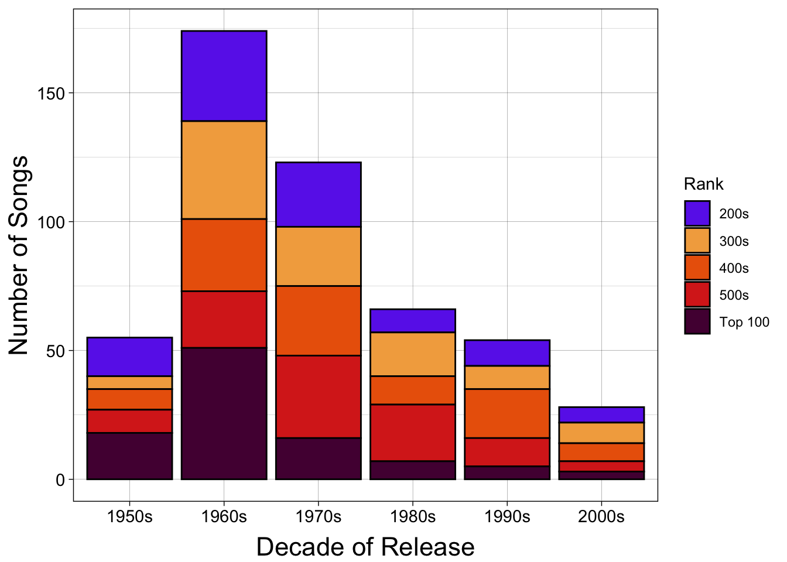
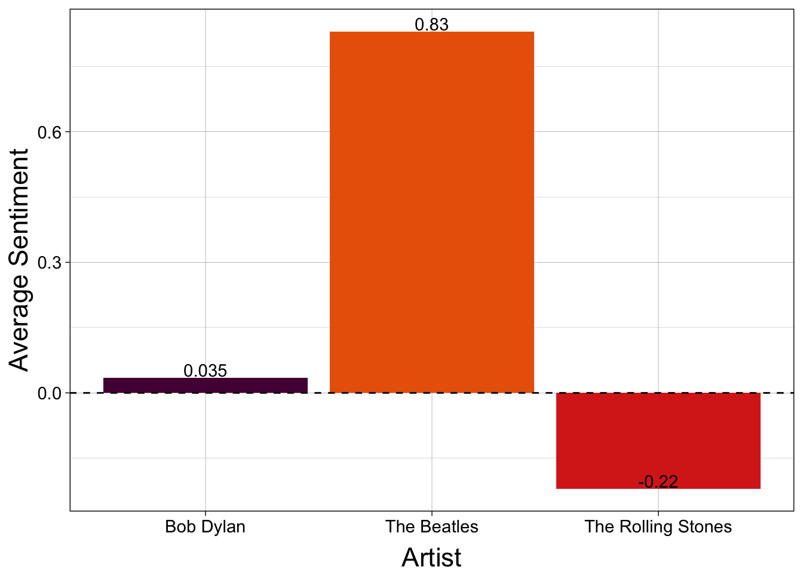

Through the Decades
The 1960s were a Great Decade for Music
The famous, often infamous, Rolling Stone magazine published its very first issue on November 9th, 1967. On the cover of the first volume of the magazine, John Lennon—one of four British Beatles—appears in a still shot from his role in the film How I Won the War. It is here that Rolling Stone planted the seeds to their long-standing legacy as a magazine about music, musicians, and pretty much anything even remotely related to the two.
Rolling Stone has set the tone for music journalism from their first issue to this very moment, and just four years shy of the magazine’s fortieth anniversary, they released the first edition of the Top 500 list. This list and its many iterations have helped shape how we quantify good music and great musicians.
The Rollin’ Sixties
Let’s take a look at how the decades shape up compared to one another on the 2013 Rolling Stone Top 500 list.

Above, Figure 2 shows the distribution of the decades represented in Rolling Stone Magazine’s Top 500 Songs of All Time. In this, we can see that the 1960s are the clear leader in terms of representation on the list. In fact, roughly 35% of the songs on the list are from the 60s. The 70s follow at around 25%, and the 50s, 80s, and 90s each represent around 10-13% of the list. There is a clear trend downward from the 60s to the 2000s, with the 2000s being the least represented decade. For more information on this breakdown, see Table 1.
Taking a closer look at where the songs fall in the ranking categories, i.e., Top 100, 200s, and so on, we can see that the 1960s have the most songs in the top 100 among all decades. However, this likely follows from the high representation of 1960s songs on the list. Interestingly, even though the 70s have many more songs on the list than the 50s, the 50s have slightly more songs in the Top 100.
Rolling Stone’s Top Three Artists
While all the artists on this list are well-deserving of their flowers, there are three artists who stand out among the rest. Combined, these three artists created nearly 10% (Table 2) of the songs on the list. These artists are, of course, The Beatles, The Rolling Stones, and Bob Dylan.


For music lovers and Rolling Stone Magazine subscription-holders, it will come as little surprise that the top 3 artists represented in Rolling Stone’s Top 500 are, in order, The Beatles, The Rolling Stones, and Bob Dylan. The Top Artists chart above demonstrates the margin by which The Beatles’ songs outnumber the other two. The Beatles have a stunning 23 songs on the list—25 if you include John Lennon’s Imagine and George Harrison’s My Sweet Lord. The top ranking song from the supergroup is Hey Jude which ranks at 8 on the list. The Rolling Stones follow The Beatles with 14 songs, their first on the list, Satisfaction, at slot 2. Finally, Bob Dylan’s first feature of his 12 total on the list takes the number 1 slot, and that song is Like a Rolling Stone.
With the magazine, top artists and, songs in mind, you may have noticed a theme among their names. The number one song on the chart, one of the top three artists, and the magazine itself all contain some form of the words “Rollin’ Stone.” The is no coincidence, the band The Rolling Stones, who debuted in 1962, and Bob Dylan’s song Like a Rolling Stone (1965) are both named for the Muddy Waters song Rollin’ Stone (1950) which is actually among the top 500, ranking in at a surprising late 459. The magazine is—with the additional influence of the proverb “a rolling stone gathers no moss”—named for all three of these astounding feats in music history.
The songwriting duo in the Beatles, John Lennon and Paul McCartney, known together as Lennon-McCartney wrote many hit songs in the 1960s (Figure 3). Though the songs they wrote for the Beatles were almost always credited to both the young gentlemen, songs written by Paul McCartney were notably more positive. Looking at Figure 4, we can see that the Beatles songs in the Top 500 tended to have a more positive sentiment, 0.83 on the AFINN’s -5 to 5 scale. For reference, Bob Dylan’s average song sentiment is around 0.035 and The Rolling Stones around -0.22. This coupled with the fact that the highest ranking Beatles song on the list is Hey Jude—a song written by Paul McCartney for Julian Lennon, John’s son—suggests that Paul McCartney could be the primary songwriter for more of the songs on the list.
Supplemental Tables
The following tables are here to support your understanding of the above analyses and substantiate the numbers, percentages, and claims made in the text.
| Songs on List by Decade | ||
| Decade |
Metrics
|
|
|---|---|---|
| Count | Percent | |
| 1950s | 55 | 11.0 |
| 1960s | 174 | 34.8 |
| 1970s | 123 | 24.6 |
| 1980s | 66 | 13.2 |
| 1990s | 54 | 10.8 |
| 2000s | 28 | 5.6 |
As the title implies, this supplemental Table 1 breaks down the number of songs and the percentage of the total songs each decade holds.
~~*~~
| Songs on List by Artist | ||
| Artist |
Metrics
|
|
|---|---|---|
| Count | Percent | |
| Bob Dylan | 12 | 2.4 |
| The Beatles | 23 | 4.6 |
| The Rolling Stones | 14 | 2.8 |
| Total | 49 | 9.8 |
Table 2 breaks down the number of songs and the percentage of the list these songs occupy. There is also a breakdown for the three artists’ combined songs.
~~*~~
| The Top Ten | ||||
| Rank |
Song Identifier
|
Release
|
||
|---|---|---|---|---|
| Artist | Title | Year | Decade | |
| 1 | Bob Dylan | Like a Rolling Stone | 1965 | 1960s |
| 2 | The Rolling Stones | Satisfaction | 1985 | 1980s |
| 3 | John Lennon | Imagine | 1971 | 1970s |
| 4 | Marvin Gaye | What's Going On | 1971 | 1970s |
| 5 | Aretha Franklin | Respect | 1967 | 1960s |
| 6 | The Beach Boys | Good Vibrations | 1966 | 1960s |
| 7 | Chuck Berry | Johnny B. Goode | 1958 | 1950s |
| 8 | The Beatles | Hey Jude | 1969 | 1960s |
| 9 | Nirvana | Smells Like Teen Spirit | 1991 | 1990s |
| 10 | Ray Charles | What'd I Say (Parts 1 And 2) | 1959 | 1950s |
Table 3 shows the top ten songs on the list. We see here that each of the top 3 artists on the list has at least one song in the top 10.
References
Ccarlsson (2019), “File:rolling-stone-vol-1-no-1.jpg,” Available at https://www.foundsf.org/File:Rolling-Stone-Vol-1-No-1.jpg#filehistory.
{kind=link}